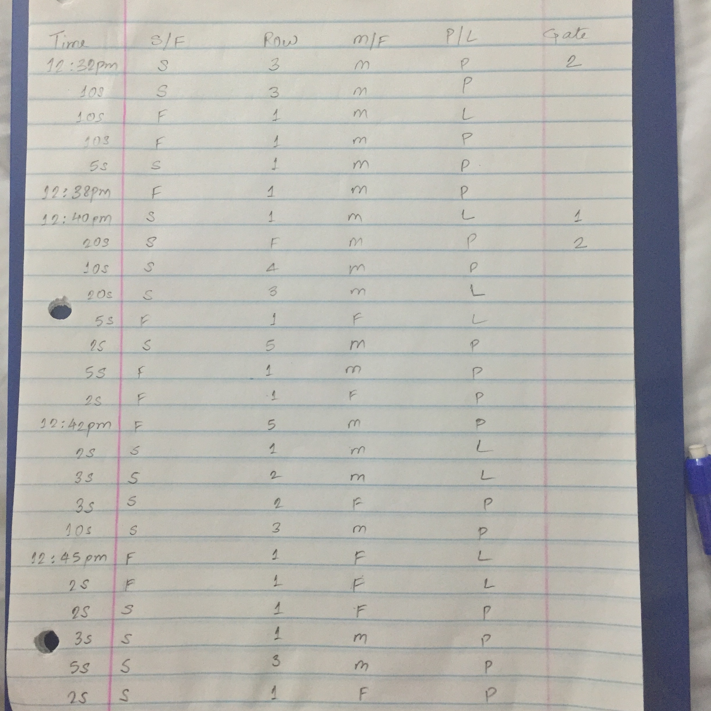
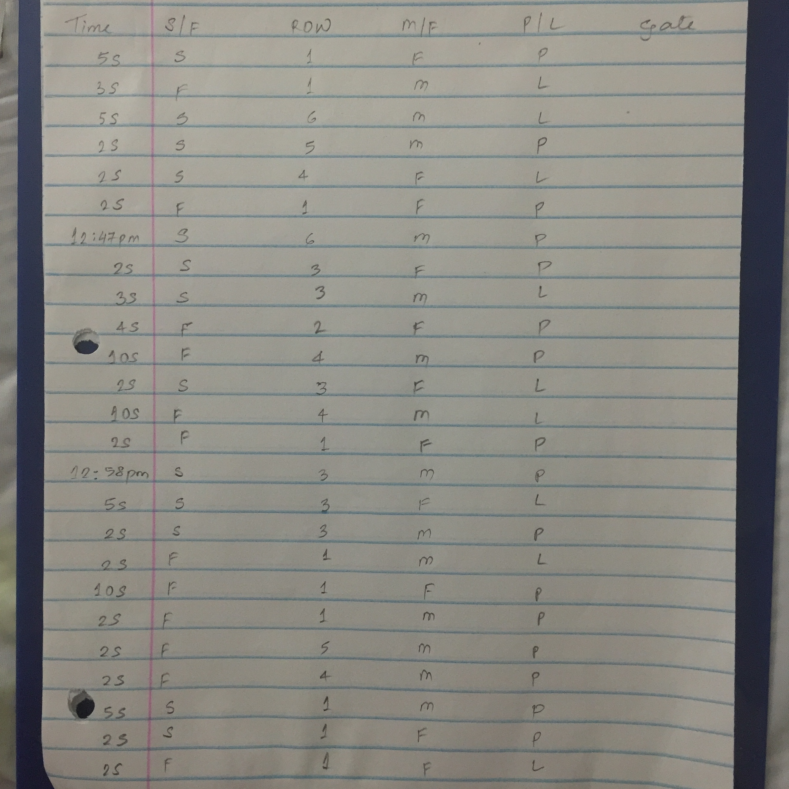
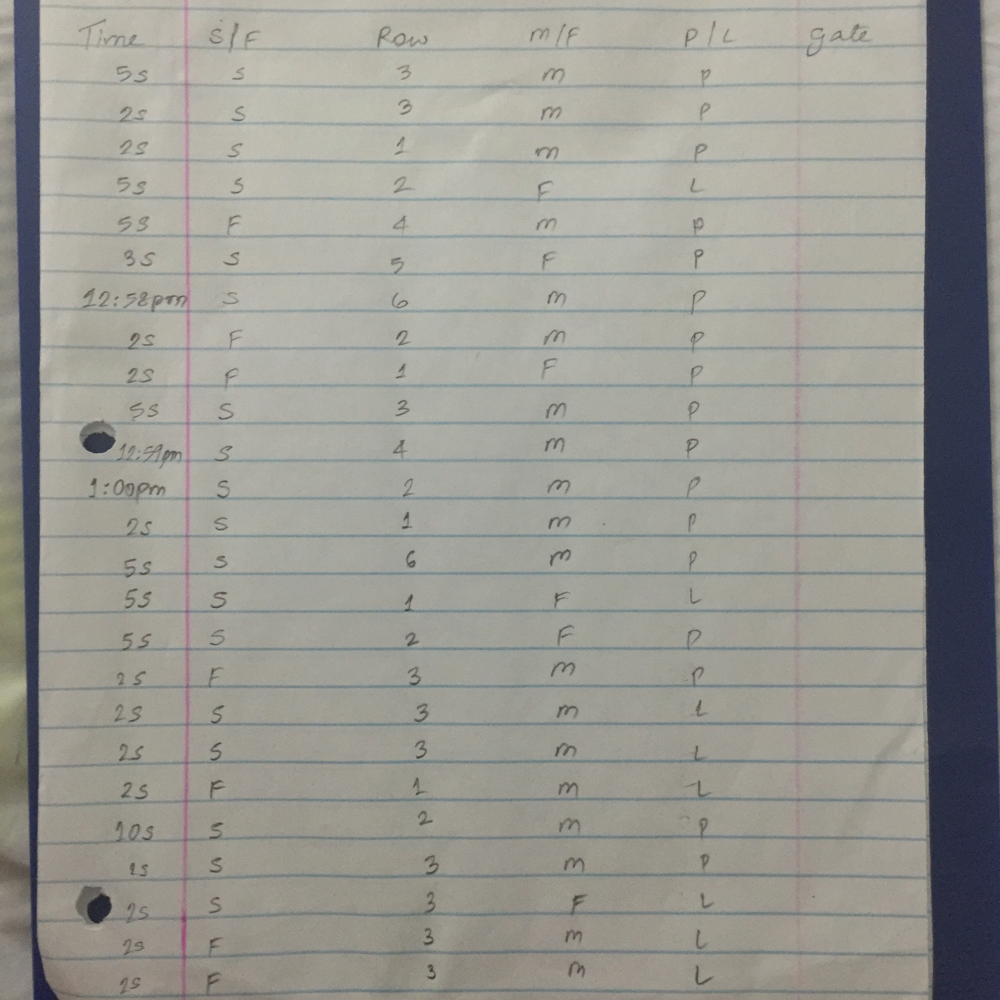
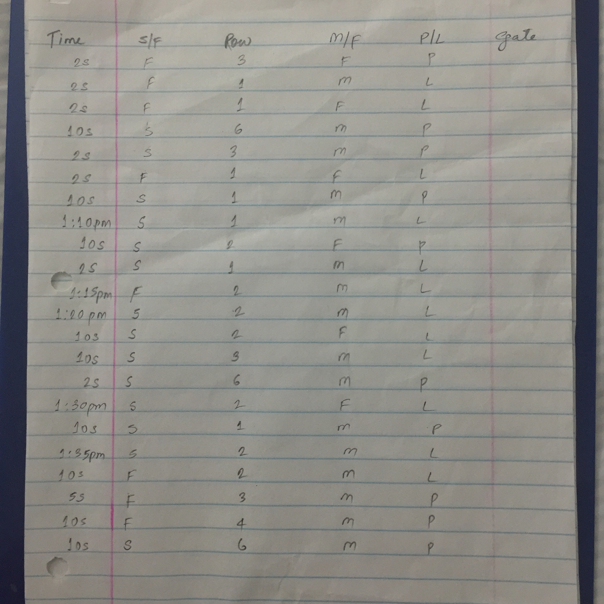
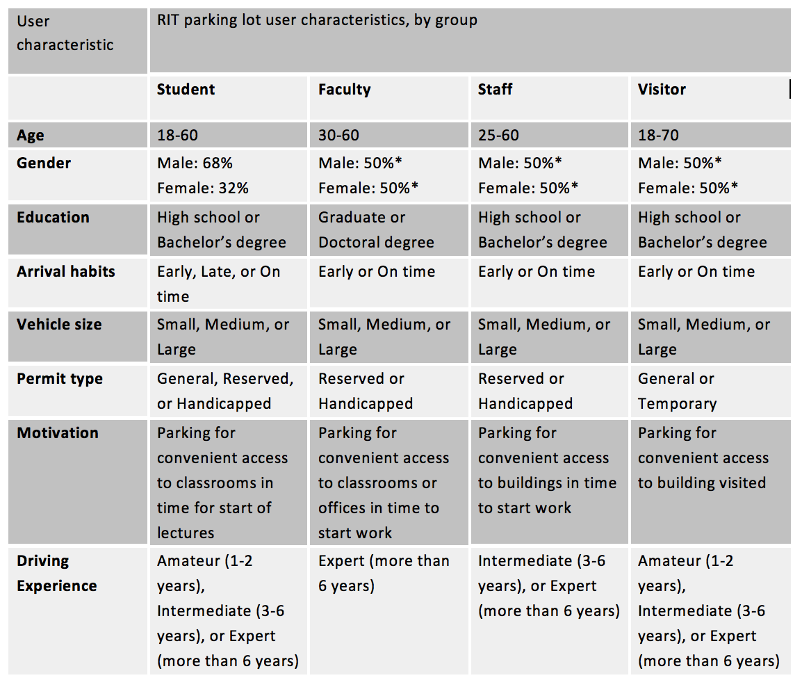
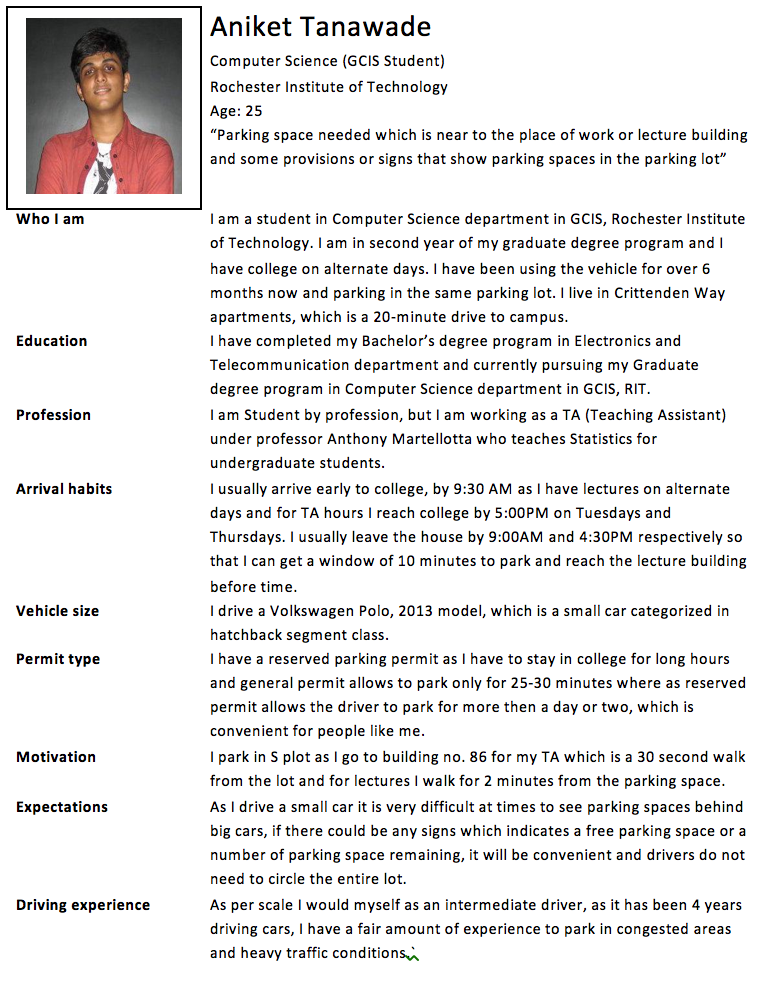
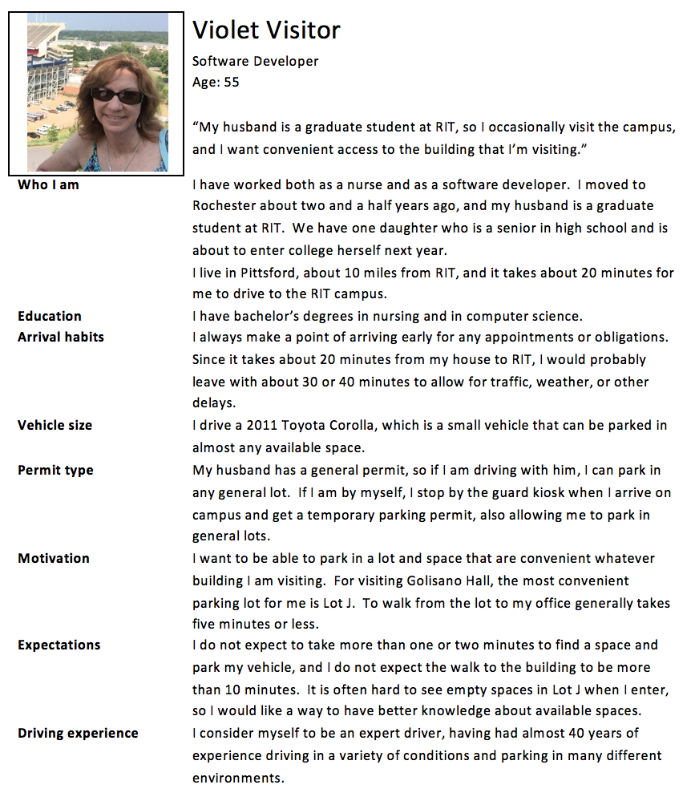

Parking Lot Design
Easy parking facility for troubled drivers
This is a process to design a application to help troubled drivers. As observed there are many drivers who face parking problems when they are in a hurry. So I tried to chalk out a initial plan to do a user research on the drivers in my college. The first step was to do a qualitiative analysis on the drivers in the parking lot by just observing their behavior. The second step was to take interviews with the drivers while they drive and ask them appropriate questions. As we got the problem scenarios we designed the personae (profiles) of the participants. The forth step was to create a story board and scenarios.
- Tools Used: Illustrator

To collect the field data and built a quantitative and qualitative analysis accordingly.
Field Data: - Data of cars parked and cars left from the parking lot was collected. Parking lot S (South of Golisano GOL, Global Village). Time: 12:32PM – 1:35PM, Friday, October 30th 2015. Conditions: C, real feel C, Cloudy, wind speeds up to 30km/h. Spaces: 622 total spaces in the parking lot, all reserved and 70% of the spaces were filled up.
- 
- 
- 
- 
Observation: - In all 96 cars were observed. Out of which 56 drivers parked their cars and 40 left the parking lot. On an average driver took approximately 50 seconds to 1.5minutes to park their car, this time depended on how the driver approached the parking space. Drivers arrive in 3 to 4 minutes of time intervals. It can be a case that it might be a start of lecture, which caused an initial rush. Drivers were mostly students, a few college staff and professors. It was a cold day so everybody had his or her sweaters on. The ratio was 65 males to 31 females. Female drivers took 40% more time to park that to males. Students who were to attend lectures parked their cars near to row 1 in the parking lot, where as the staff preferred parking spaces after 3rd row. Almost all the cars entered or exited the parking lot from gate number 2, which is on the right hand side of the image shown on the first page. Drivers were aged between 20-50 approximately. Some observations that led to some research questions and interview questions were, some drivers found it hard to find a parking space as some cars were categorized in SUV that are big heavy duty vehicles which obstructed their sight to recognize a available parking space behind it. The initial rush to the parking lot made me curious to ask some interview questions regarding the selection of the parking lot and the parking space that they choose. As per observations too many cars were parked in S parking lot and too many left as well, how convenient was it for the drivers to find a space and if not what measures can be taken to reduce the problem to minimal. One very odd observation made was not all people parked their cars in the same fashion. Some parked their cars towards the end line of the car park and some parked away from it, i.e. either the cars tail faced the end yellow line or the cars head faced the end yellow line. Which made me a bit curious to ask this observation as an interview question to the person to be interviewed. One possible answer that came to my mind was maybe some people are well organized and because some people don’t like to go reverse while leaving the lot and it makes them easy to leave rather then wasting time to reverse the car and then turn to desired direction.
To conduct interview with the drivers going to the parking lot (walk through process).
Research Question and Interview Questions: - From the initial observations, several possible research questions arise. A basic question would simply be: “How convenient is parking at RIT?” This might result in a variety of qualitative answers, but these answers would likely be different depending upon the particular parking lot in question and the time of day being considered. Note that different group members performed observations for this study independently and different lots were observed at different times. While the data recorded suggests that access to parking in Lot J between 8:15 and 9:15 on a Thursday was fairly easy, the data recorded for Lot E is quite different, indicating that very few spaces were available there during the 4:00 to 5:00 interval. Therefore, a more specific research question might be more helpful, such as: “What improvements could be made to the RIT parking system to make parking more convenient?” or even better: “Does driver usage of RIT parking lots suggest ways that the parking system could be improved?” This last question lends itself to data collection and further study, since it targets an observable phenomenon – the behavior of drivers who use the RIT parking lots. The goal of this research is to learn whether the observed behavior can be used to identify problems with the current system, and if so, whether any improvements suggest themselves.
To build profiles and personas of the drivers by taking their problems into consideration.
The following user profile table categorizes RIT parking lot users by the three most common user types: Student, Faculty, Staff and Visitor.
- 
- 
- 
To create a suitable scenario and a storyboard to explain it better.
Test Based Problem Scenario: Persona: Violet, Visitor Setting: RIT Parking Lot J I’m visiting RIT today to meet my husband after his class in Golisano Hall at 11:00. I’m driving my 2011 Toyota Corolla, and the weather is clear and cool. I enter the RIT campus at the main entrance from Jefferson Road; turn right before the roundabout, then left on Reynolds Drive.
To conduct interview with the drivers going to the parking lot (walk through process).
I would like to park as close as possible to Golisano Hall, in Lot J. There are four entrances to the main part of the lot from this road, but I know that the two closest sections of the lot are for “Reserved” permits only, and I have my husband’s General permit, so I have to choose one of the two northernmost entrances. The lot looks to be at least half full, and of course the closest sections fill up first. I can’t see clearly if there are any available spaces, but I have about ten minutes to spare before meeting my husband, so I’ll take a chance and choose the closer entrance. As I turn right into the lot and head west, I see two cars heading toward me from the other side of the lot – maybe one of them has just left an open spot. I continue down the row, but don’t find any open spaces in the eastern half of the lot. I pause at the central crosswalk to yield to a couple of pedestrians. I continue through the lot and reach the western side without finding any open spaces. Those other drivers must have been looking for parking too. I turn right and then right again to head back east down the next row. I see some open spaces, but I want to go as close as I can to the central crosswalk so I pass a few spaces – it’s hard to see if there are any closer ones, so I pick one about eight spaces from the crosswalk, on the left side. I use my turn signal and slow down, and then carefully turn left into the space, and then put the car in park. I turn off the car, get out, then close and lock the door behind me. From here it will take me about ten minutes to walk to the building, and since it took me an extra minute or so to find an available space, I might be a few minutes late to meet my husband. I’ll text him to let him know. Design Scenario: Persona: Aniket Tanawade, R.I.T Student Setting: RIT Parking Lot S I’m driving to RIT today for my 9:30 class in Brown Hall. It’s cool and rainy today, so I hope I don’t have to walk too far in the rain. I’m driving my 2013 Volkswagen Polo, and I have my “Reserved” permit to allow me to park in the closest spaces to the buildings. The lot is very popular and the closest spaces are often full, so as I enter from Tyler Drive on the west side, I look up to consult the LotMonitor at the entrance. The LotMonitor consists of a 8 x 8 foot square display monitor mounted on a pole at the west side of Lot S, and at the top it displays in large bright green text: “Available Spaces: 200 of 622”. Beneath that, there is a graphical representation of Lot S, with all the occupied spaces indicated with a red ‘O’ and all vacant spaces indicated with a green ‘V’. Handicapped spaces are outlined with a blue rectangle and reserved spaces are outlined with a yellow diamond shape. The colors are a quick indication for those with typical vision, while the letters provide the necessary information for colorblind drivers. The building is on the east side of the lot, and I can see that all of the closest spaces in the second and third rows are filled, but the fourth row has several open spaces fairly close to the east side of the lot, so I turn right at the fourth row and drive toward the building. I see one car heading east in front of me in the same row, and the driver parks in a free spot on the left. I saw on the display that there were still two more available spots on the right side of the row further east, so I continue driving, and I find the open spaces, as expected. I use my turn signal and pull into a space. I know that the LotMonitor’s sensors in the parking lot will detect my car and change this space from a white rectangle to a Red signal to indicate to later arrivals that this space is no longer available. The number of available spaces will also be decremented as necessary. I get out, lock the car, and head to my 9:30 class; it looks like I’ll be five minutes early.